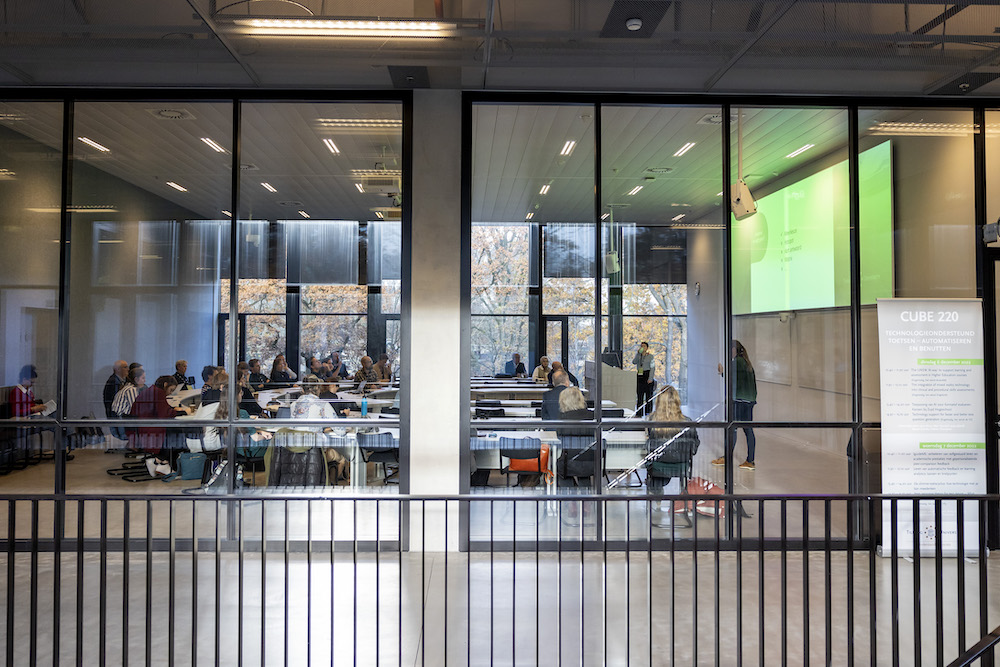
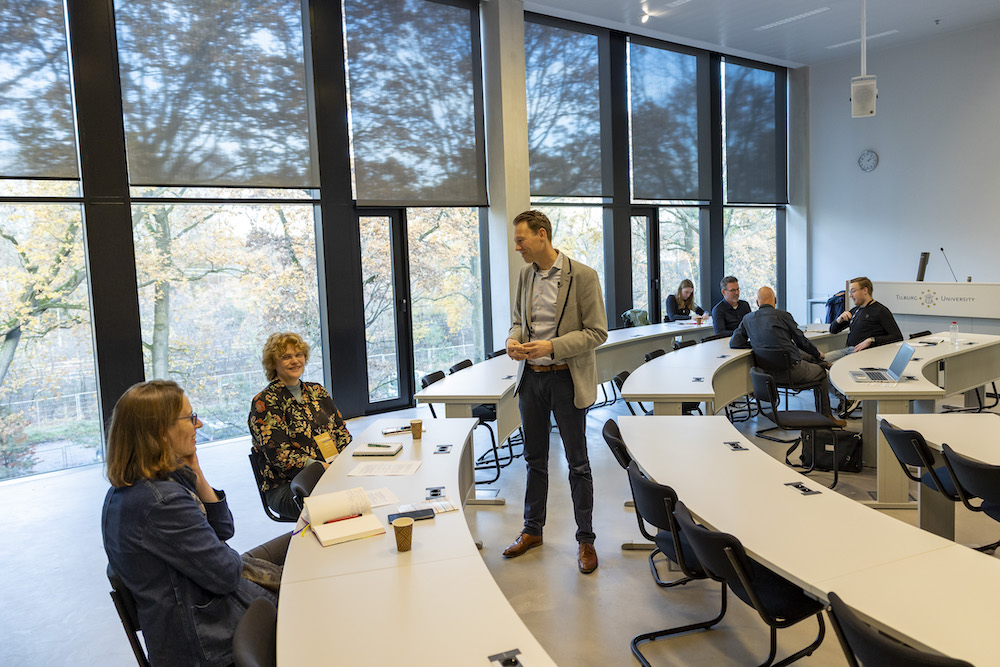
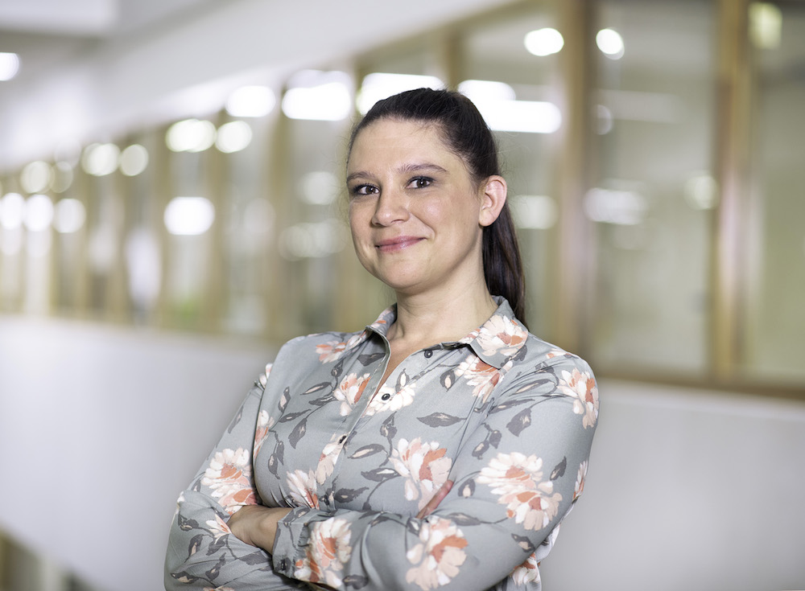
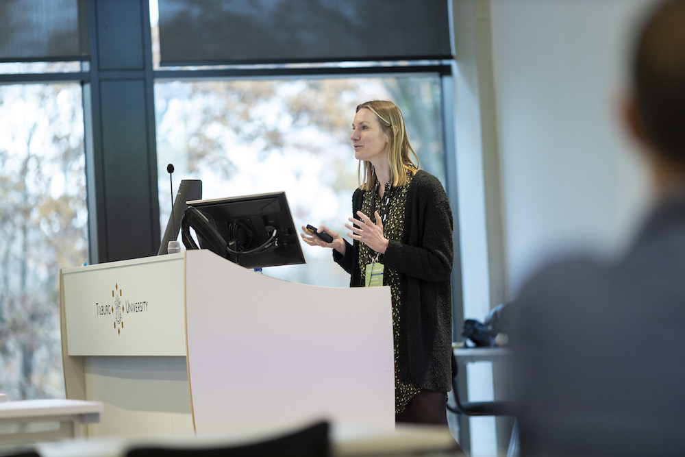
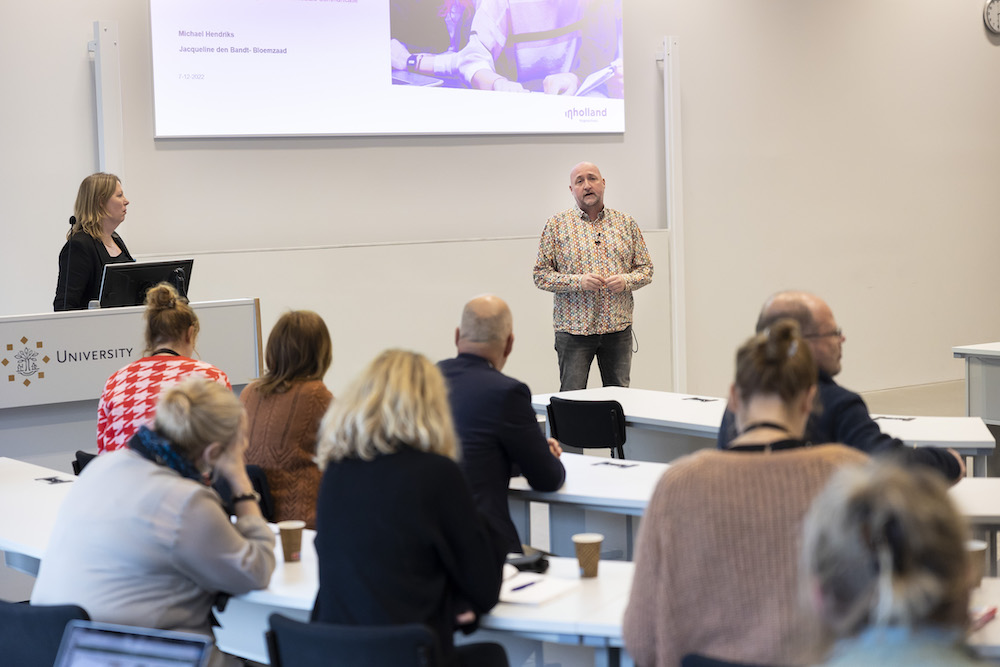
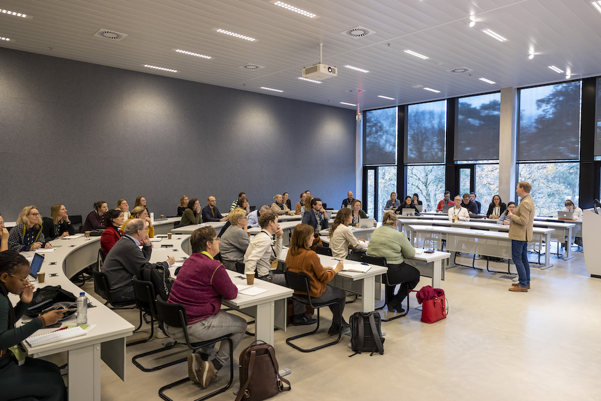

Toets2daagse
Jaargang
T2D 2022
T2D 2018
Sessies dag 2
Sessies dag 1
Sessies dag 2
Sessies dag 2

De menselijke factor in cesuurbepalingen
Dec 7, 2022
dr. Wilco Emons , dr. Sebastiaan de Klerk
De slimme toetscyclus hoe technologie met je kan meedenken
Dec 7, 2022
Romy Noordhof, MSc., Eva de Schipper, MSC.

De virtuele toetswerkplek: Lessons learned
Dec 7, 2022
drs. William van Santen
Digitaal toetsen – Draait het alleen om het middel?
Dec 7, 2022
ing. Ingmar Hallie, Tim Evers MSc
Hoe zorg je voor senior gekwalificeerden in examinering (SKE-ers) op een universiteit?
Dec 7, 2022
drs. Helma Vlas, Sonja Borst, MSc
IguideME verbeteren van zelfgestuurd leren en academische prestaties met gepersonaliseerde peer-comparison feedback
Dec 6, 2022
dr. ing. Erwin van Vliet
Inkopen via SURF: Krachtenbundeling loont
Dec 7, 2022
Ellena Papageorgiou
Item Response Theory for Test Design: What can we learn for application in Higher Education?
Dec 7, 2022
dr. Nathan Thompson
Keynote: Programmatisch toetsen: Hype of ei van Columbus?
Dec 7, 2022
dr. Cor Sluijter
Keynote: Regie op de inzet van technologie
Dec 7, 2022
dr. Kelly Beekman
Leren van automatische feedback en learning analytics: Kansen en knelpunten
Dec 7, 2022
dr. Esther van der Stappen

Programmatisch toetsen: Aan de slag met de online leeromgeving
Dec 7, 2022
dr. Tamara van Schilt-Mol
Programmatisch toetsen: Hoe kun je dit nu praktisch inrichten?
Dec 7, 2022
Wessel Peeters, MEd.
Realisatie geautomatiseerd proces digitaal toetsen
Dec 7, 2022
Jeroen Kassenberg, Evelien Westerbeek van Eerten
Samenversnellen, het spel, geef meer vaart aan wendbaar en flexibel Onderwijs
Dec 7, 2022
Marcel Penners

ShareStats: Statistiekopgaven open delen binnen een vakcommunity van docenten
Dec 7, 2022
dr. Marleen de Moor

Van vooruitstrevend onderwijsconcept naar keiharde realiteit
Dec 7, 2022
Michael Hendriks, MEd., Jacqueline den Bandt-Bloemzaad, MSc.
Vind de meest geschikte toets met de Keuzetool toetsen
Dec 7, 2022
Edwin Buijs, MSc, drs. Sharon Klinkenberg

Why assessment drives learning
Dec 7, 2022
drs. Sharon Klinkenberg
iRAT/tRAT: De activerende samenwerkende rol van toetsen in Team-based Learning
Dec 7, 2022
drs. Jacqueline Vos, Sylvia van der Marel, drs. Hans Slabbekoorn
No matching items
Sessies dag 1